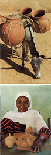

| Articles A Ceramic Safari in East Africa The work of the department head at Sudan University, Professor
Salih El Zakir, has adhered to a meticulously executed Arabic style. One
quite successful alumnus is Yasir Mohammed. Yasir's elaborately formed
pieces are most often unglazed. Large sculptural vessels are slipcast,
with a clay body having no deflocculent. The plaster used for molds is
of a low quality typical in much of Africa but the addition of 4 percent
portland cement helps to give the molds strength. Left: At the Khorobhagarat kiln, a brick making team at work. These soft mud bricks quickly lose their shape. Across the White Nile from Khartoum, in neighbouring Omdurman, another ceramic devotee is Dr Ahmed Hassan Hood. To financially diversify his business making refractory brick, Dr Hood produces a line of decorative planters and small ziers. As is often the case in Africa, where shared information can be hard to come by, the artist must attempt to be a scientist, and vice versa. Dr Hood is a chemical engineer turned ceramist. Remarkably, with no prior experience other than research in books, he has begun production of good quality kaolin firebrick fired to 1400° C. Dr Hood's oil-burning, domed brick kiln was built through trial and error, and patience. His own ceramic journey has been one of pure scientific inquiry: an acquired understanding of what the local materials can do. Near El Obeid, at Khorobhagarat, the construction of a Hoffman kiln is a new project of the United Nations Development Program (UNDP). Firing with heavy fuel oil, an express objective for this kiln is to reduce the amount of wood fuel used for brick making in the area. I gave brick forming teams at the kiln some assistance in using a drier mix of clay. With this improvement, the kiln's managers were able to achieve improved stacking in the kiln, resulting in better firing, stronger bricks and reduced fuel consumption.  Left: Taking a break while carrying water ziers the 15 kilometres from Dajo to El Obeid market. Below left: Fatimah Hassan with an earthenware duck. The Vocational Center at El Obeid, Sudan. Because success in marketing is closely dependent on good technical skills, in 1992 in the United States, I founded Appropriate Technology Transfer in Ceramics (ATTIC). My aim was to provide services and technical information to aspiring ceramists. We distributed two do-it-yourself manuals. I wrote one on making models and moulds and another on how to build and operate an inexpensive air-release ceramic press. We also made available 25 out-of-print technical papers which give the basics on various ceramic processes and materials. ATTIC flourished assisting ceramists from the United States and many other countries, proving that what is appropriate is needed everywhere and is forever relevant. Appropriate technology is not only applicable to remote villages in the heart of Africa. A similar body of information exists in back copies of The American Ceramic Society Bulletin, also from the 1930s to the '60s but the demand has not warranted reprinting. Only more recent information, primarily on advanced ceramics, is being rendered to electronic libraries. In the 1970s, my initial pursuit of ceramic information started in Liberia, West Africa. There I worked for 11 years in glass art and I dabbled in ceramics. I began to notice that Liberia and neighbouring countries appeared stuck in a cycle of raw materials exportation and finished goods importation. For export they could mine iron, cut timber and tap rubber, but they manufactured little. In Liberia, I walked every day on a path of kaolin, yet I had to import firebricks for our kiln. Although Liberians and their neighbours were melting and casting iron and other metals in the 19th century, it seems that the metal products imported from Europe and the United States supplanted local products. The metal-working industries closed and craft traditions were lost. When I saw this, I decided glass art was too ornamental for me and I could work in ceramics to change these situations for the better.
|
|
| © Ceramics Today |